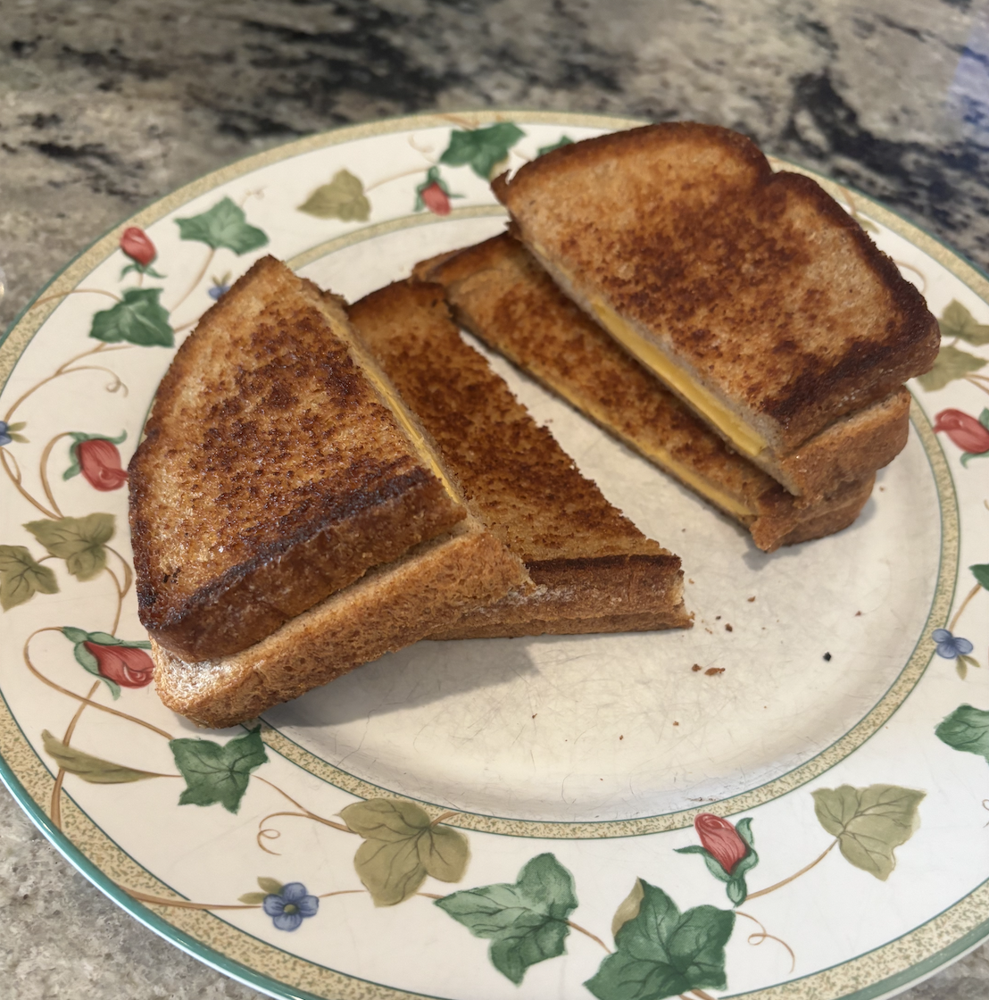

crispy cheese bread

photo credit: my human olivia
this is bread and cheese and butter. i love bread and cheese
and butter.
this seems amazing and delicious but of course my
humans refuse to give me any of it
because they're all selfish
and mean.
my human grandma ahma invented this recipe and she
loves me very much yet she still won't give me any. :(
i get tons of compliments on my grilled cheese!
- ahma
tips and substitutions
- make sure to spread butter thinly so that it will toast well.
- check the bread frequently because it will toast much
quicker then you think it will.
remember, if you're a human making this for your dog, they don't want to eat bread if it's burned.
(well. i might, but they probably won't.)
ingredients
| ingredient | amount |
|---|---|
| butter | five tablespoons |
| whole wheat bread | eight slices |
| american cheese | eight slices |
| servings: 4 sandwiches | prep time: 20 - 30 min |
instructions
- soften the butter in the microwave. (do not melt)
- place bread on a plate or cutting board.
- spread butter on one side of each slice of bread.
- place griddle on medium heat on the stove.
- when the griddle is warm, pour the extra butter onto it.
- lay out two slices of cheese for each sandwich.
- spread the butter out on the griddle with a spatula.
- place four slices of bread on the griddle
with the butter side down.
then on top of those put two slices of cheese
each and then the other four bread slices,
butter side on top. - lift up the sandwiches regularly to check if they are
cooked.
when brown and toasted (but not burned!!), flip over. - alternate lifting the sandwiches to check
if they are toasted and pressing them down with the spatula. - when the second sides are toasted,
turn off the heat and put the sandwiches onto plates. - cut the sandwiches in half with a sharp knife.
eatfeed to your hungry dog immediately.